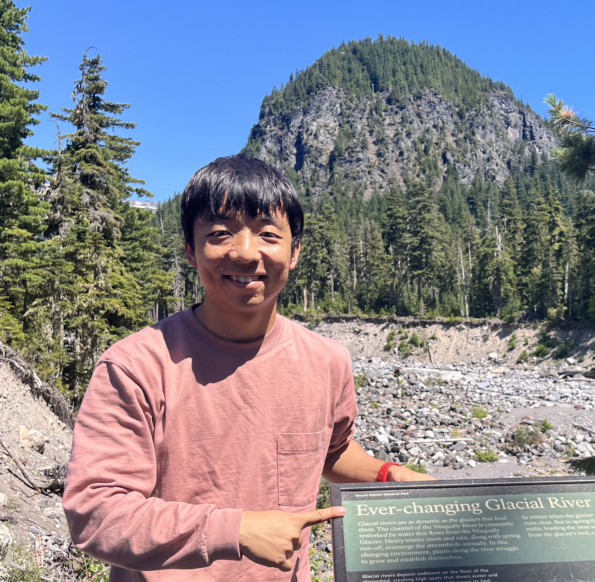

|
 |
I'm an AI research scientist working across foundation models, model evaluation, neural architecture design, and large-scale training and inference systems. I completed my PhD in Applied Mathematics at CEREMADE, PSL Research University in 2025, advised by Laurent D. Cohen, and previously worked with PRAIRIE and Google TPU Research Cloud. My recent evaluation work at Mercor focuses on exact-answer math benchmarks, agentic scientific-coding tasks, and process-level reward data for code and mathematical reasoning. Open to work: I'm open to research scientist, research engineer, and applied machine learning roles. Email: changqingfu@changqingfu.com Links: CV | Google Scholar | GitHub | LinkedIn Research themes: Foundation-model architectures, training and inference efficiency, model evaluation |
Mercor (2025-2026), Benchmark/Evaluation Researcher. Designed process-level reward data for code and math reasoning models, calibrated exact-answer math evaluation suites, and built agentic scientific-coding benchmarks with unit-tested subtask decomposition and automated QC pipelines.
Google TPU Research Cloud (2023-2025), Research Fellow. Migrated large-scale training pipelines from PyTorch to JAX, improved TPUv3 throughput via XLA compilation and sharded training, and reduced image-generation pretraining from days to hours.
PRAIRIE and CEREMADE, PSL (2019-2025), PhD Researcher. Developed geometric and axiomatic views of neural architectures, ran reproducible large-scale diffusion experiments, and published work showing up to 10 percent lower generalization error and 1000x parameter reduction.
Earlier industry experience (2016-2018). Built ranking, recommendation, and forecasting systems in finance and energy, including Spark pipelines over TB-scale data for 30M+ users and double-digit business or accuracy gains.
Transformers Are Optimal Effective Fields (NeurIPS 2025 workshop). Axiomatic derivation of Transformer-like architectures and a canonical viewpoint on neural-network design. video poster
DeepPrism: Channel Convolution for Lightweight Generative Models (ACM VSIP 2023, Best Presentation Award). Architectural constraints for smaller and faster generative models, demonstrating up to 1000x parameter reduction while preserving competitive quality. slides
Conic Activation Functions (PMLR 2024) and Conic Linear Units (VISAPP 2024). Geometric activation design for improved generative-model generalization, model fusion, and rotational symmetry. poster
Geometric Deformation on Objects: Unsupervised Image Manipulation via Conjugation (SSVM 2021). Contour-guided image manipulation with a robust two-stage pipeline and adaptation to shifted inputs. slides
Reviewer for NeurIPS, ICLR, CVPR, ICCV, ECCV, AAAI, AISTATS, and BMVC.
Best Presentation Award, ACM VSIP 2023 for DeepPrism.
Selected invited talks and workshops: Yonsei University Seminar on Tropical Mathematics and Machine Learning (2026), ML Collective Research Jam (2025), NYU Paris Workshop on Optimal Transport, Mean Field Games, and Machine Learning (2025), Fudan Applied Math Seminar (2025), and Stability AI Research Program at CogX (2023).
AugmentAI Research Prize at ETHCC 2023 for WebGPU for Zero-Knowledge Proofs.